Bem-vindo ao manual de The Bug Force: A Revolta dos Bits! Aqui você encontra tudo que precisa para salvar a escola: personagens, habilidades, fases, vilões e mecânicas de jogo.
Objetivo
Derrote os professores possuídos e abra caminho pelos corredores da escola
Enfrente o Professor Carlos Possuído na Fase 2 para libertar seu espírito
Complete as 3 fases e derrote Vera a Rainha dos Bugs no confronto final
Acumule pontos para desbloquear novos personagens e habilidades especiais
Controles
Cenarios
Personagens Disponiveis
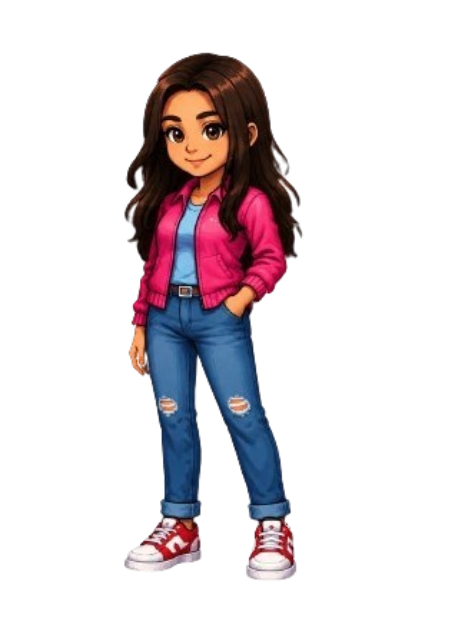
Larissa
Classe: Líder
Habilidade: Convoca um aliado para ajudar na batalha.
Ponto Forte: Comando em Equipe
🍰 Missão? Depois do Almoço Se sentir cheiro de comida, a batalha entra em pausa imediatamente.
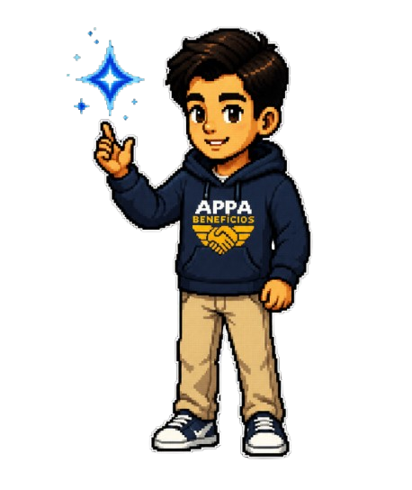
Ueslei
Classe: Atirador
Habilidade: Precisão de Tiro
Ponto Forte: Acertos Críticos
💘 Fatality Romântico Um simples "amor" é suficiente para cancelar qualquer missão.
Jair
Classe: Força
Habilidade: Super Dano
Ponto Forte: Alto Dano
🍮 Pudim Master Troca qualquer luta por um bom pudim.
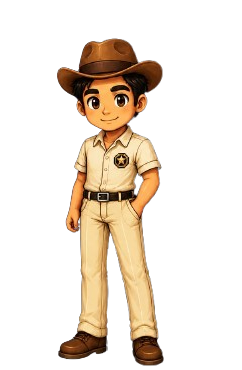
Eliel
Classe: Área
Habilidade: Chicotada
Ponto Forte: Dano em Área
💘 O Último Romântico Mulheres aplicam dano crítico na sua concentração.
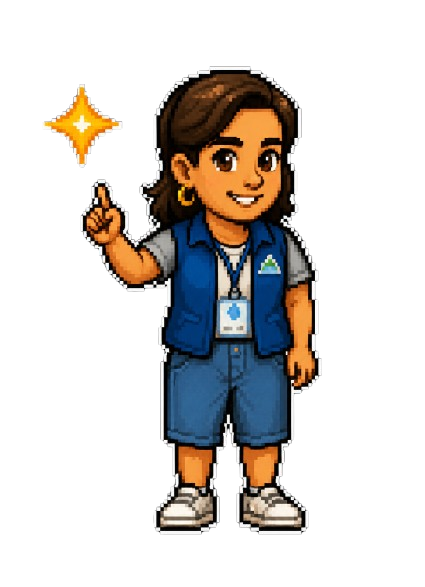
Sandra
Classe: Suporte
Habilidade: Chuva Gramatical
Ponto Forte: Atinge vários inimigos simultaneamente.
😤 "Mais" ou "Mas" Um erro de português desperta sua forma mais poderosa.
🔒 Desbloqueável por pontuação.
Janice
Classe: Lutadora
Habilidade: Super Soco
Ponto Forte: Alto dano em alvo único.
🤏 Calcanhar de Aquiles Uma simples cosquinha é capaz de derrotá-la.
🔒 Desbloqueável por pontuação.
Iza
Classe: Curandeira
Habilidade: Poder da Cura
Ponto Forte: Recupera vida dos aliados.
🧸 Hora da Soneca Se o bebê acordar, nem o chefão é prioridade.
🔒 Desbloqueável por pontuação.
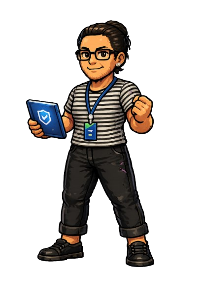
Sandrinha
Função: Mentora
Especialidade: Explicar as Regras
Ponto Forte: Sempre sabe o que fazer e dá as melhores dicas para completar cada desafio.
📜 Fique de olho nas instruções dela. Elas podem salvar sua missão!
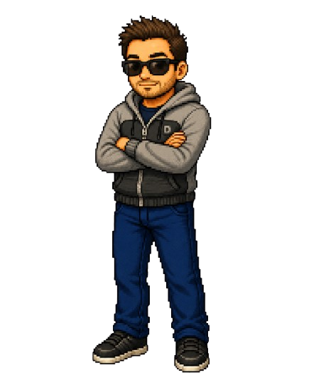
Maçaneiro
Função: Mentora
Especialidade: Explicar as Regras
Ponto Forte: Sempre sabe o que fazer e dá as melhores dicas para completar cada desafio.
📜 Fique de olho nas instruções dela. Elas podem salvar sua missão!
VILÕES
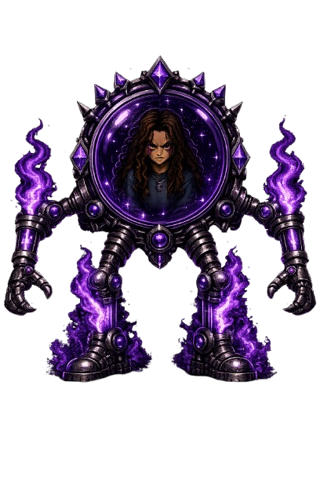
Vera
Título: Rainha dos Bugs
Principal antagonista do jogo.
Poder: Possui professores e controla bugs digitais.

Prof. Carlos
Tipo: Chefe da Fase 2
Ataques fortes e padrões complexos.
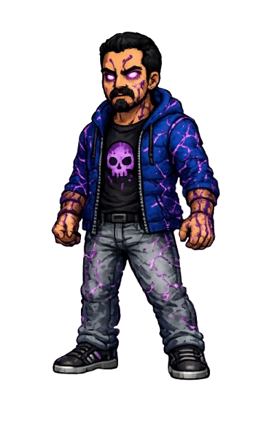
Prof. Duds
Tipo: Corrompido
Inimigo genérico da Fase 1.
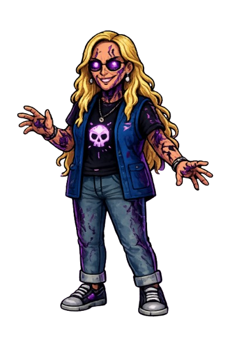
Prof. Josi
Tipo: Corrompida
Inimiga genérica da Fase 1.
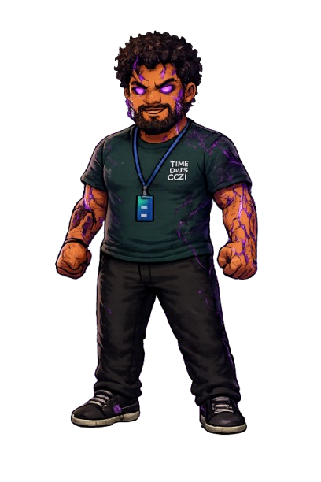
Prof. Wendel
Tipo: Corrompido
Guardião da escola dominado pelos bugs.
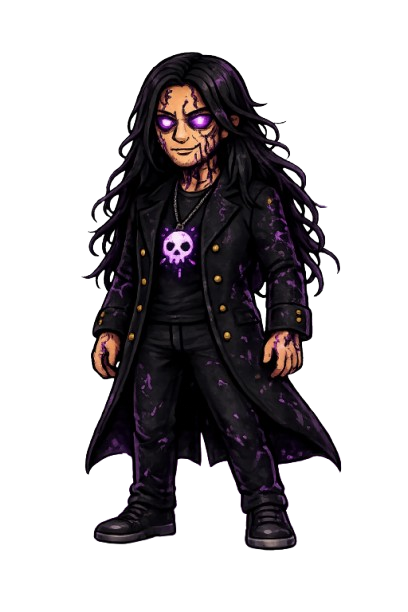
Diretora Ju
Tipo: Corrompida
Lidera os professores possuídos.